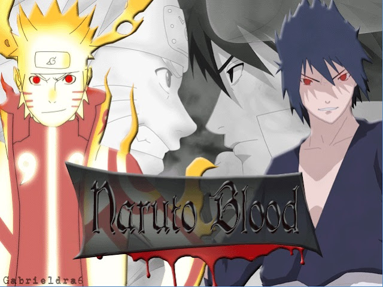

>_ Hello World!
>_ Hello World!
|
| Beranda | Profil | Software | Tutorial | Kontak |
Apa itu Root Android? Manfaat dan BahayanyaAndroid merupakan sebuah sistem operasi yang dibangun dari kernel Linux. Android bersifat open source. Android juga bersifat multiplatform yang artinya sistemnya mudah diinstall di berbagai device yang berbeda-beda. Berbeda dengan sistem operasi seperti iOS yang hanya bisa diimplementasikan di perangkat keluaran Apple. Smartphone android juga memiliki harga yang terjangkau dibanding iPhone. Ini salah satu sebab mengapa pengguna Android lebih banya dibanding yang lain... Lanjutkan membaca |
Konten Terkait :
|
Game Naruto Battle Arena 2D Naruto merupakan sebuah karakter fiksi yang ada di dalam anime (kartun jepang) berjudul Naruto. Naruto sendiri merupakan karakter utama pada cerita tersebut. Animenya sangat populer bahkan sampai ke luar Jepang. Selain itu, para penontonyapun tidak hanya anak-anak, tetapi ada juga orang dewasa yang senang dengan cerita Naruto. Selain anime, Naruto juga banyak diadopsi ke berbagai aspek seperti game. Naruto Battle Arena 2D seperti gambar disamping merupakan salah satu contoh game Naruto yang dapat dimainkan di PC/Laptop. Game ini cukup ringan dan tidak membutuhkan spek tinggi. Namun game ini memiliki size cukup besar sekitar 12GB. Ini karena game ini memuat lebih dari 300 lebih pilihan karakter dan 50 lebih arena bertarung... Lanjutkan membaca |
|